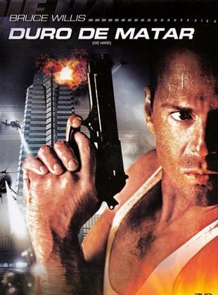

O policial de Nova York John McClane está visitando sua família no Natal. Ele participa de uma confraternização de fim de ano na sede da empresa japonesa em que a esposa trabalha. A festa é interrompida por terroristas que invadem o edifício de luxo. McClane não demora a perceber que não há ninguém para salvá-los, a não ser ele próprio.
Cinco assassinos se encontram em um trem-bala veloz de Tóquio a Morioka com apenas algumas paradas entre eles. Eles descobrem que suas missões não são desvinculadas uma da outra. A questão é: quem sairá vivo do trem e o que os espera na estação terminal?

Baseado no famo so jogo Batalha Naval, o filme acompanha a jornada de um navio que se depara com um exército alienígena que tenta conquistar a Terra. Para defender o planeta, a tripulação precisa confiar em uma estratégia única.